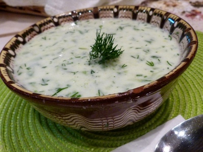
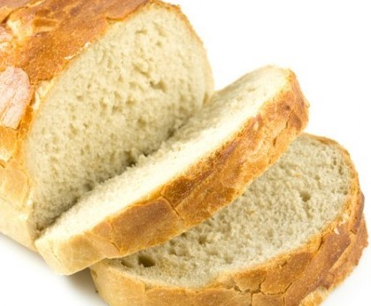
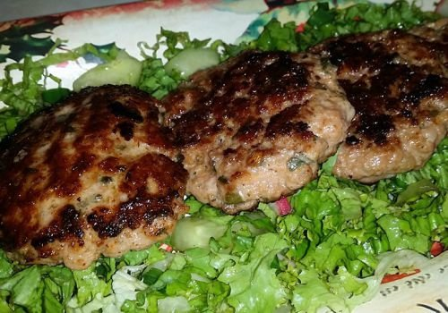
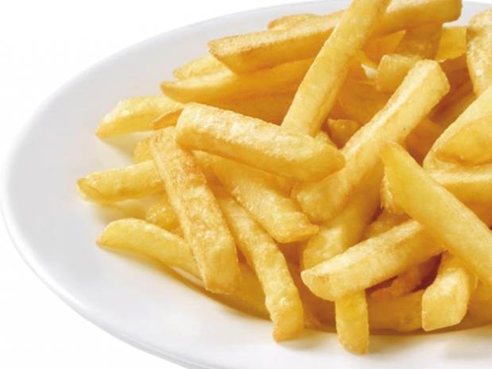
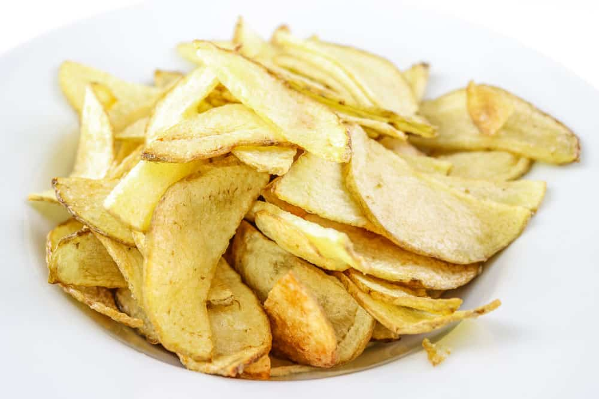
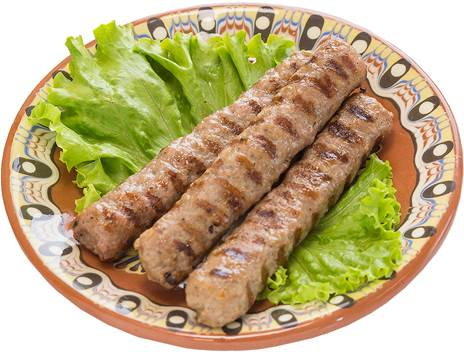
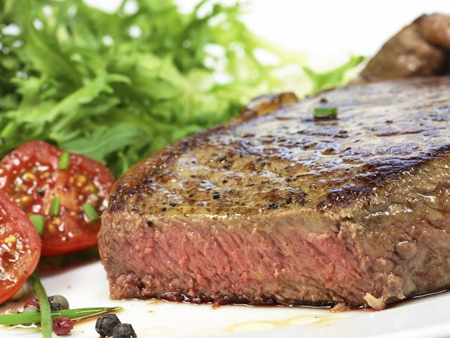
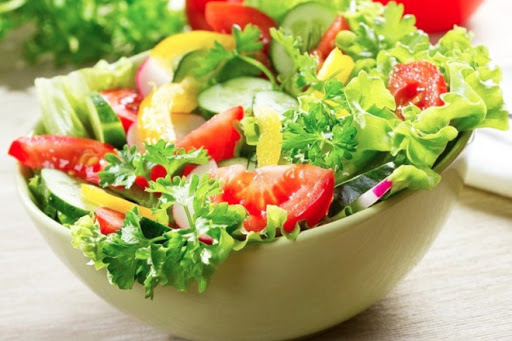

Храни, ястия
Таратор
|  | За горещите летни дни, с доза охлаждане и свежест цена: 2 лв/300мл. |
Домашен хляб - филия
|  | Хубав пресен топъл хляб, поднесен със шарена сол цена: 1 лв/бр. |
Пържени кюфтета
|  | Кюфтета от истинско българско месо, поднесени с гарнитура от пържени картофи, на канапе от лист зелена салата цена: 3лв/2бр. |
пържени картофи
|  | Ниско калорични картофи на тиган, добро мезе за бира, в топлите летни дни цена: 3лв/300г. |
Домашен чипс
|  | Нещо съвсем обикновено, но не чак толкова вредно, натурален чипс, само със сол...ммм...да си оближете пръстите цена: 5 лв/300г. |
Специалитети на скара
|  | Кебабчета, кюфтета, наденици, кърначета...скарата е неизменна част от бирата, в топлото лято. Поднасят се с гарнитура от пържени картофи, върху канапе от лист зелена салата цена: 2лв/2бр. |
Свинска вратна пържола
|  | Вратна пържола на скара, поднесена с гарнитура от пържени картофи, пожеалание с чипс, върху канапе от лист зелена салата цена: 3лв/200г. |
Палачинки
 |
Вкусни палачинки, както за десерт, така и за закуска. Пълнеж: предлагаме различни видове сладка: ягода, праскова, череша, както и с течен шоколад цена: 2лв/бр. |
Зелена салата
|  | Прясно подбрани български зеленчуци: Зелена салата, салата айсберг, репички, краставица, лук, авокадо, розови домати, подправена с малко лимонов сок, сол и зехтин цена: 5лв/400г. |
Кътче от рая!